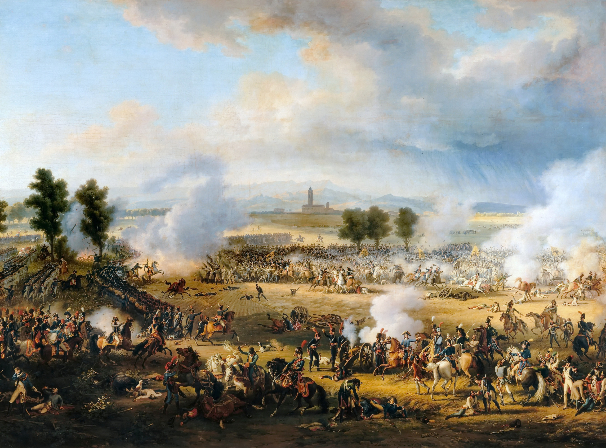
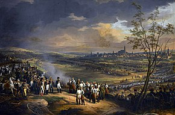
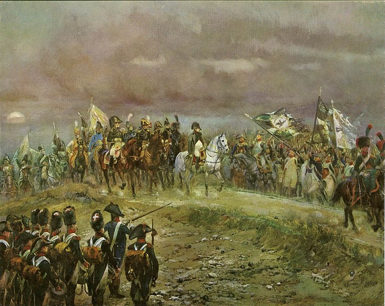
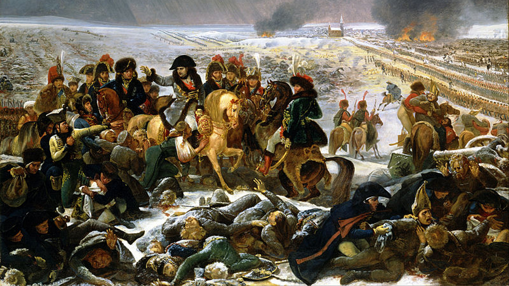
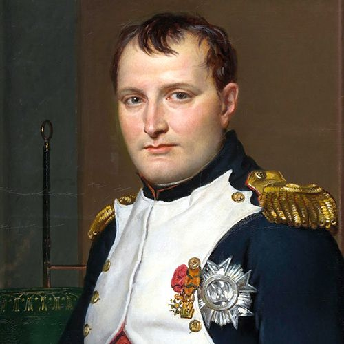
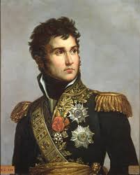
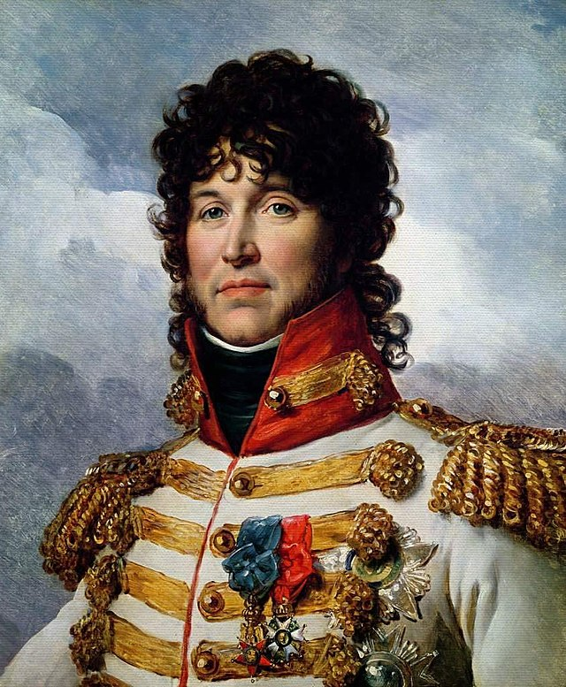
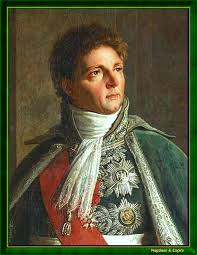

Napoleonic Battles

Battle of the Marengo (June 14, 1800)
Napoleon faced Austrian forces in northern Italy. The Austrians initially pushed the French back, but Napoleon’s reinforcements, led by General Desaix, arrived in the afternoon. A sudden French counterattack caught the Austrians off guard. The French crushed the Austrian forces, securing control over Italy. This victory solidified Napoleon’s position as First Consul of France.

Battle of the Austerlitz (December 2, 1805)
Known as the "Battle of the Three Emperors," Napoleon faced Russian and Austrian forces. He lured them into attacking his weakened right flank, only to launch a decisive counterattack in the center. The French army broke through the enemy lines, forcing the Russians and Austrians to retreat. It was a crushing victory that dismantled the Third Coalition. This battle is considered Napoleon’s greatest strategic masterpiece.

Battle of the Jena-Auerstedt (October 14, 1806)
Napoleon’s army engaged Prussian forces in two simultaneous battles. At Jena, Napoleon outmaneuvered the Prussians and broke their lines. At Auerstedt, Marshal Davout’s corps, though outnumbered, held firm and defeated the main Prussian army. The victory led to the collapse of the Prussian state. Napoleon occupied Berlin shortly after.

Battle of the Eylau (February 7–8, 1807)
A brutal winter battle against the Russians in East Prussia. The fighting was fierce, with heavy casualties on both sides. Napoleon launched a massive cavalry charge led by Murat to break the Russian lines. Although the French held the field, the battle ended inconclusively. It was one of Napoleon’s bloodiest engagements.
Napoleon with Marshals

Napoleon Bonaparte
Napoleon Bonaparte was a French military general and emperor who rose to power during the late 18th and early 19th centuries. He became the ruler of France after the French Revolution and expanded his empire across much of Europe through a series of military campaigns. His legal and administrative reforms, particularly the Napoleonic Code, had a lasting impact on many legal systems worldwide. However, his ambitions led to his downfall after a failed invasion of Russia and defeat at the Battle of Waterloo in 1815. He was exiled to the island of Saint Helena, where he died in 1821.

Michel Ney
Michel Ney (1769–1815) was a French military commander and one of Napoleon Bonaparte's most trusted marshals. Known as the "Bravest of the Brave," he played a crucial role in many of Napoleon’s campaigns, including the Russian invasion of 1812 and the Battle of Waterloo in 1815. Despite his loyalty, he was forced to order the retreat from Moscow, a disastrous moment for the French army. After Napoleon’s defeat, Ney was arrested and executed by firing squad for treason in December 1815, having supported Napoleon’s return during the Hundred Days. His legacy remains as one of France’s greatest military leaders.

Jean Lannes
Jean Lannes (1769–1809) was a French military commander and one of Napoleon Bonaparte’s most trusted marshals. Rising from humble origins, he distinguished himself in numerous battles during the French Revolutionary and Napoleonic Wars. Known for his bravery and tactical brilliance, Lannes played key roles in victories at Marengo (1800), Austerlitz (1805), and Jena (1806). He was mortally wounded at the Battle of Aspern-Essling (1809), marking one of Napoleon’s greatest personal losses. Napoleon deeply mourned his death, calling him "the most outstanding of all my marshals."

Joachim Murat
Joachim Murat (1767–1815) was a French military leader and Marshal of France under Napoleon Bonaparte. Known for his flamboyant personality and daring cavalry tactics, he played a key role in Napoleon’s campaigns, including the Battle of Austerlitz and the invasion of Russia. In 1808, Napoleon made him King of Naples, where he attempted reforms but struggled to balance loyalty to France with ruling his own kingdom. After Napoleon’s fall, Murat tried to reclaim his throne but was captured and executed in 1815. His legacy remains as one of the most colorful and bold commanders of the Napoleonic era.
